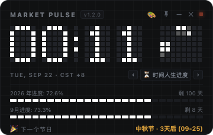
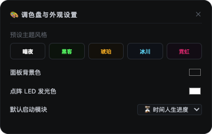

融合 5×7 LED 硬件点阵字体、毫秒级粒子波形动态矩阵、时间人生进度与系统资源监控，支持 1:1 紧凑悬浮与调色盘自选。


1:1 精确定义点阵字形，已调优为低饱和度护眼哑光色泽（剔除高眩光），分钟跳变时自动触发逐行像素卷帘翻页（Pixel Roll）动效。
时钟右侧配备微秒级流体粒子引擎，随时间连续波动，呈现生生不息的机械流逝感与科技氛围。
暗夜、黑客绿、琥珀橙、冰川蓝、霓虹粉 5 大预设主题一键切换，支持任意拾取自定义 LED 发光色并持久化保存。
升级为高清矢量 SVG 图钉，点击具备 45° 倾斜与红亮双重状态反馈，支持全屏与跨工作区始终悬浮在顶层。
底层深度配置 macOS LSUIElement 机制，运行后完全不占用屏幕底部的 Dock 栏位置，打造纯粹无干扰的桌面常驻体验。
轻量进程设计，日常驻留物理内存仅 ~100MB，CPU 占用低于 1%，全天静默运行不发热、不耗电、不拖慢 Mac。
全自动计算 2026 全年进度百分比、剩余天数；当月进度条；并智能侦测下一个传统/法定节日（如中秋节、国庆节）实时倒计时。
调用 Node.js 底层硬件接口，实时显示 Mac 当前的 CPU 综合占用率（含核心数）与 RAM 内存占用量（已用/总计 GB），以动态像素条直观跳动。
内置标准 25 分钟专注工作 / 5 分钟休息番茄工作法循环，带大号倒计时数字与像素进度条，点击随时开始、暂停与重置。
纯净的多时区时钟：实时同步 北京 (UTC+8)、东京 (UTC+9)、伦敦 (UTC+1) 与 纽约 (UTC-4) 本地时间，适合跨国协作开发者。
实时判断 上交所 (SSE)、港交所 (HKEX)、纽交所 (NYSE) 交易时段开市与休市状态（绿色 OPEN / 暗灰 CLOSED）及当地时间联动。
一键自动隐藏底部所有模块，窗口智能折叠收缩为 136px 超紧凑纯时钟条，最大程度减少视觉干扰。
macOS 统一内存机制科普：macOS 采用「空闲内存即浪费」的设计哲学。系统会主动将频繁调用的 Chrome 标签页、应用代码、系统缓存保留在 RAM 中以便毫秒级秒开。当大型生产力软件（如视频剪辑、3D 渲染）需要内存时，系统会自动瞬时压缩与释放缓存。
本软件资源消耗实测：
# 1. 克隆代码仓库
git clone https://github.com/your-username/desktop-pixel-clock.git
cd desktop-pixel-clock
# 2. 安装依赖 (基于 Node.js 18+)
npm install
# 3. 启动开发运行
npm start
# 4. 一键打包为 macOS 原生 .dmg 文件
npm run dist